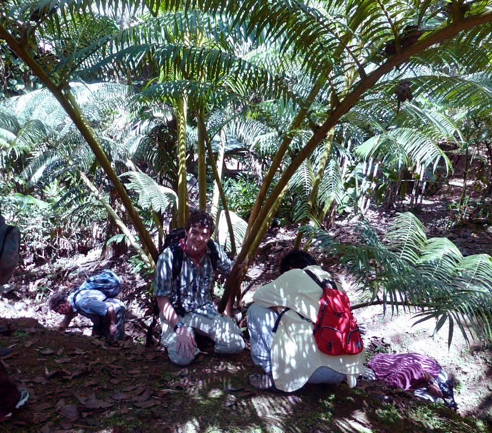
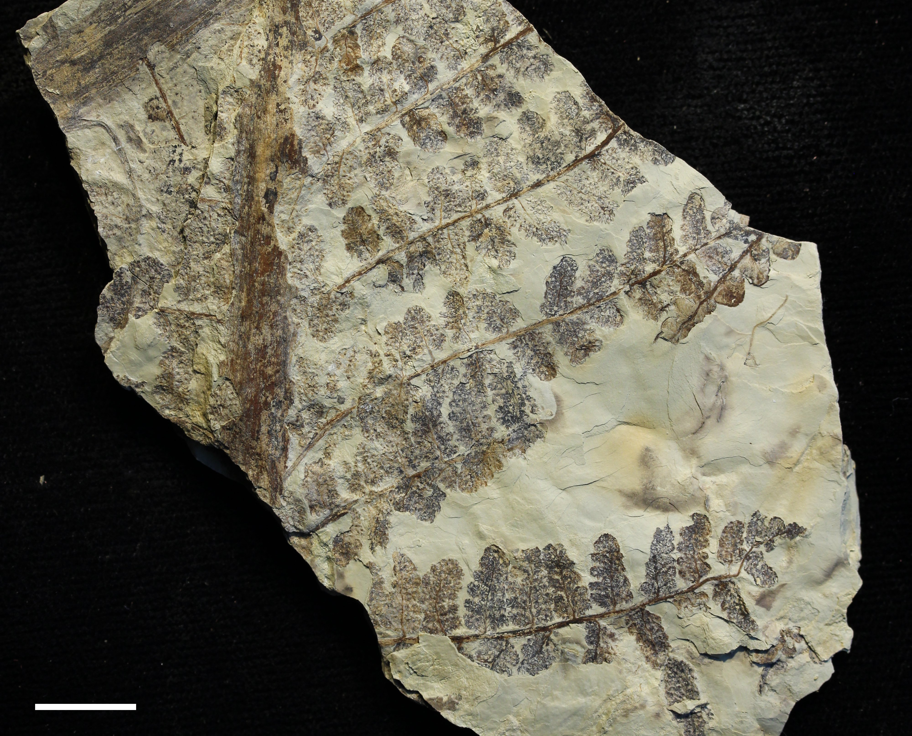

Tree ferns in the Tonganoxie valley
Summary: in the Late Pennsylvanian, much of the canopy in tropical wetlands was made of marattialean tree ferns. Today there are only about a hundred or so species of marattialean ferns, but none of them are trees like Psaronius. Psaroniaceae fossils are among the most common plant fossils in Upper Carboniferous rocks, but the stems, leaves, roots and sporangia have been given their own names. This post is my reference for that history, and a place to keep notes on a plant locality in the Tonganoxie Sandstone near the Kansas City airport where I have collected some nice fossils
The airport site
The KC airport site was discovered by a geologist working on a survey to update a geological map of the region. When she found well-preserved plants in the cutbank of a small creek in Platte County, MO, on Kansas City International Airport property, she put a few samples in her bag. She showed me the samples, and we got permission to return and collect more. The fossils came from the Tonganoxie Sandstone Member of the Stranger Formation. This unit fills a northeast–southwest trending incised paleovalley. The erosion that caused the incision happened during a time of sea-level fall in the late Missourian, and the valley was filled again during the following transgression, near the start of the Virgilian, about 305 million years ago (Lins 1950; Buatois et al. 1998).
Plant fossils have been found in this unit before. The incised valley runs between Kansas City, MO and Lawrence, KS, and cuts through the lower Stranger Formation into the upper Lansing Group; it is 24–30 m (80–100 ft) deep, 14–20+ miles wide. The Tonganoxie Sandstone Member is dominated by cross-bedded sandstones near the base, but mudstones good for plant fossils are more common near the top. Lins (1950) reported well-preserved plant fossils, but never described or figured them. Collectors have found many well-preserved plant fossils at Buildex Quarry near Ottawa, Kansas, where tidal rhythmites preserve arthropod trackways, insect traces, fish trails, tetrapod tracks and root traces (Buatois et al. 1997, 1998), but I don't think that site is accessable anymore. Buatois and colleagues interpreted these as tidal flats at the most landward part of an estuary, where the tides still reached but the water was fresh. At the airport site, we found calamities, ferns, pteridosperms, and conifers. The most common ferns are large are marattialean-type fern fronds.
What are marattialean ferns?
The Marattiales are an order of ferns that can be found in tropical forests today. The genera are Angiopteris, Christensenia,
Danaea, Eupodium Marattia, and Ptisana.
They have short tuberous or creeping stems, large fleshy stipules at the base of the fronds and the sporangia on the underside of the leaves are fused into oval or biseriate groups called synangia that are easy to recognize.
The living ones all belong to the family Marattiaceae, but during the Paleozoic, members of the extinct family Psaroniaceae were tall tree-ferns with radial sporangial clusters, mostly in the genus Psaronius.
Jeanne Morgan (1959) provided a nice history of Psaronius in her monograph, which is available on the Internet Archive.
She wrote that in 1828, Anton Sprengel recognized the specimens people had collected as “starling stones” and “worm stones” were fossil fern stems, and he named them Endogenites;
then in 1832, John Cotta segregated out some of those ferns as the new genus Psaronius.

Like all ferns, Psaronius trees grew from spores; the small thalloid gametophytes produced sporelings. As the sporeling grew upwards, the stems got wider and wider to support larger fronds. Since ferns don’t have secondary growth, this resulted in a stem shaped like a slender, inverted cone. To support the stem, they produced many adventitious roots that grew downward and covered the base of the trunk in a thick outer mantle of roots. The internal anatomy of the stem increases in complexity as the stem gets larger. Near the base the narrow stem has xylem and phloem arranged in a simple protostele, but as you move up the stem, it transitions to a siphonostele and then a polycyclic dictyostele, with new cycles added inside old ones (Stidd 1974; Morgan 1959). The squiggly segments of xylem that make up the polycyclic dictyostele are visible in trunk cross-sections. In compression fossils, frond attachment scars are visible on the upper part of the trunks; these fossils are called Caulopteris when the scars are alternate or Megaphyton and Artisophyton when the scars are in longitudinal rows (Pfefferkorn 1976; Stidd 1974).

The compressed fronds of Psaronius are grouped into several fossil genera, broadly referred to as pecopterid foliage. The ultimate pinnules are broadly attached to the pinna by the whole base and have a single midvein (Stidd 1974). When they are fertile, they have exannulate sporangia, usually in radial synangia, with two rows of synangia per pinnule (Stidd 1974). I have a hard time keeping the names straight; I learned to call the sterile leaves Pecopteris, but Cleal (2015) says Pecopteris should be restricted to tedeleacean ferns (formerly Senftenbergia) and not used for marattialean fronds. Now, fronds are grouped into Asterotheca, Polymorphopteris (sterile)/Acitheca (fertile), Cyathocarpus, Diplazites unitus (often called Pecopteris unita), Lobatopteris, Crenulopteris, and Remia. The Polymorphopteris/Acitheca group used to be called the Pecopteris polymorpha group, Cyathocarpus used to be called Pecopteris arborescens, Diplazites unitus used to be called Ptychocarpus (fertile) and Pecopteris unita (sterile). Lobatopteris was first defined by Wagner (1959) but is now split into Lobatopteris and Crenulopteris, the former produced trilete spores and the latter produced monolete spores.

There are even more names when you include permineralized plants, and for understanding relationships I tend to trust these more. Christian Zenker named Scolecopteris elegans in 1837 for petrified fertile pinnules from the Permian of Saxony. Scolecopteris should only be applied to permineralized mater because some the features that define Scolecopteris (the attachment, the anatomy of the pedicel, the cell types in the sporangial walls) can only be seen in permineralized material (Millay 1979; Liu et al. 2000; Cleal 2015).
Genus comparison table
| Genus | Pinnules | Lateral veins | Sori / synangia | Spores | Range (Euramerica) |
|---|---|---|---|---|---|
| Asterotheca† | Elongate, linguaeform, slightly decurrent; strong, weakly decurrent midvein | Polymorphopterid: 2nd fork in distal (acroscopic) branch of 1st; 3rd fork in proximal (basiscopic) branch | One row each side of midvein; radial, usually 6 large bulbous sporangia | Trilete, punctate | Upper Kasimovian–Gzhelian |
| Lobatopteris s.s. | Linguaeform to subtriangular, often decurrent; neighbours often joined at base | 2nd fork in distal branch; 3rd fork (rare) in the middle of three | One row each side; sessile, radial, 4–5 bulbous sporangia fused only at base | Trilete, microverrucate or microgranulate | Upper Bashkirian–Moscovian |
| Crenulopteris (Lobatopteris auct.) |
Linguaeform to subtriangular, mostly lobed or pinnatifid; less decurrent | Crenulopterid: 2nd fork in distal branch; 3rd fork in the middle of three | One row each side; radial, 4–5 sporangia | Monolete, microgranulate | Upper Moscovian on |
| Cyathocarpus | Small, slender, linear, rounded apex, rarely lobed; nearly perpendicular to a stout rachis | Usually simple or forked once | Pedicellate; 4–5 partly fused, elongate, radial sporangia | Monolete (very rarely trilete), small, microgranulate | Upper Moscovian on |
| Acitheca | Tri- or quadripinnate fronds; linguaeform to suboval, larger pinnules constricted at base or pinnatifid | Polymorphopterid, dense, near right angles to the margin | Two rows; sessile, radial, ~4 elongate sporangia projecting beyond the down-turned margin | Trilete, large, microverrucate to rugulate | Upper Moscovian on |
| Polymorphopteris | Linguaeform, unlobed; larger pinnules constricted at base | Polymorphopterid | Unknown (sterile only) | Unknown | — |
| Diplazites (= Ptychocarpus) |
Linear-lanceolate, contiguous, often partly fused; distal pinnae may fuse into one large pinnule | Simple or forked once, steep; fasciculate in fused pinnae | Sessile; 5–7 slightly elongate sporangia fused at base | Monolete, papillate | Upper Moscovian on |
| Remia† | Linguaeform with vaulted limb, nearly perpendicular; longer ones lobed; fertile pinnules with little or no lamina | Irregular, 1–3 (rarely 4) forks; both patterns | Large, pedicellate, radial; up to 14 wedge-shaped sporangia on a basal disc | Trilete, punctate | Upper Kasimovian–Gzhelian |
Where marattialeans came from and where they went
Two recent phylogenetic analyses included both living and fossil species. Rothwell et al. (2018b) used parsimony and found two major clades: the wholly extinct Psaroniaceae, and Marattiaceae which includes all living species and goes back to the Late Permian. May et al. (2021) used total-evidence Bayesian dating and Psaroniaceae was paraphyletic with Marattiaceae nested within, but they did find a large Psaroniaceae clade containing most or all species of Scolecopteris. Their best model put the origin of the order in the Devonian, a burst of speciation in the Mississippian, and a peak in diversity at the end of the Carboniferous. There are Mesozoic occurrences, but I know of no macrofossil evidence of Marattialeans from Cenozoic deposits.
6. What I'll be looking for in the Tonganoxie material
- Vein branching order: separates Asterotheca, Crenulopteris, Cyathocarpus
- Pinnule shape and angle to the rachis (Cyathocarpus: small, linear, nearly perpendicular)
- Fertile pinnules: synangium position (terminating veins at the margin in Asterotheca)
- Spores: macerate if any sporangia survive; monolete vs. trilete narrows it down (Bek 2021; Wittry et al. 2014)
Papers I can't find or haven't read yet that might inspire edits or updates:
- Barthel, M. 2005. (Shows the type of Scolecopteris elegans is a petrified Cyathocarpus arborea; cited in Cleal 2015.)
- Laveine, J.-P. 1969, 1970 (in situ spores of compressed marattialeans; the basis for Laveine's ten groups).
- Lundgren, K.R., Cúneo, N.R., Escapa, I.H. & Tomescu, A.M.F. 2019. A new marattialean fern from the Lower Permian of Patagonia (Argentina) with cautionary tales on synangial morphology and pinnule base characters. International Journal of Plant Sciences 180: 667–680.
- Mamay, S.H. 1950. Some American Carboniferous fern fructifications. Annals of the Missouri Botanical Garden 37: 409–477.
- Rohn, R. et al. 2021. (Source of the marginal synangium arrangement in Asterotheca.)
- Rothwell, G.W., Millay, M.A. & Stockey, R.A. 2018a. Escapia gen. nov.: morphological evolution, paleogeographic diversification, and the environmental distribution of marattialean ferns through time. In Krings, M. et al. (eds), Transformative Paleobotany. Academic Press.
- Zenker, J.C. 1837. Scolecopteris elegans Zenk., ein neues fossiles Farrngewächs mit Fructificationen. Linnaea 11: 509–512.
References
- Bek, J. 2021. Palynological grouping of Paleozoic marattialean miospores. Review of Palaeobotany and Palynology 284: 104341. doi:10.1016/j.revpalbo.2020.104341
- Buatois, L.A., Mángano, M.G. & Maples, C.G. 1997. The paradox of nonmarine ichnofaunas in tidal rhythmites: integrating sedimentologic and ichnologic data from the Late Carboniferous of eastern Kansas, USA. Palaios 12: 467–481. doi:10.2307/3515384
- Buatois, L.A., Mángano, M.G., Maples, C.G. & Lanier, W.P. 1998. Allostratigraphic and sedimentologic applications of trace fossils to the study of incised estuarine valleys: an example from the Virgilian Tonganoxie Sandstone Member of eastern Kansas. Kansas Geological Survey Bulletin 241: 1–27. doi:10.17161/kgsbulletin.no.241.20401
- Cleal, C.J. 2015. The generic taxonomy of Pennsylvanian age marattialean fern frond adpressions. Palaeontographica Abt. B 292: 1–21. doi:10.1127/palb/292/2015/1
- DiMichele, W.A. & Phillips, T.L. 2002. The ecology of Paleozoic ferns. Review of Palaeobotany and Palynology 119: 143–159.
- Kidston, R. 1925. Fossil plants of the Carboniferous rocks of Great Britain. Part 6. Memoirs of the Geological Survey of Great Britain, Palaeontology 2: 523–670.
- Lins, T.W. 1950. Origin and environment of the Tonganoxie sandstone in northeastern Kansas. Kansas Geological Survey Bulletin 86(5): 105–140. KGS online version
- Liu, Z.-H., Hilton, J. & Li, C.-S. 2000. Review on the origin, evolution and phylogeny of Marattiales. Chinese Bulletin of Botany 17: 39–52.
- May, M.R., Contreras, D.L., Sundue, M.A., Nagalingum, N.S., Looy, C.V. & Rothfels, C.J. 2021. Inferring the total-evidence timescale of marattialean fern evolution in the face of model sensitivity. Systematic Biology 70: 1232–1255. doi:10.1093/sysbio/syab020
- Millay, M.A. 1979. Studies of Paleozoic marattialeans: a monograph of the American species of Scolecopteris. Palaeontographica Abt. B 169: 1–69.
- Morgan, J. 1959. The morphology and anatomy of American species of the genus Psaronius. Illinois Biological Monographs 27. University of Illinois Press, Urbana.
- Murdock, A.G. 2008b. A taxonomic revision of the eusporangiate fern family Marattiaceae, with description of a new genus Ptisana. Taxon 57: 737–755.
- Pfefferkorn, H.W. 1976. Pennsylvanian tree fern compressions Caulopteris, Megaphyton, and Artisophyton gen. nov. in Illinois. Illinois State Geological Survey Circular 492: 1–31.
- Phillips, T.L., Peppers, R.A. & DiMichele, W.A. 1985. Stratigraphic and interregional changes in Pennsylvanian coal-swamp vegetation: environmental inferences. International Journal of Coal Geology 5: 43–109.
- Pryor, J.S. 1996. The Upper Pennsylvanian Duquesne coal of Ohio (USA): evidence for a dynamic peat-accumulating swamp community. International Journal of Coal Geology 29: 119–146.
- Rothwell, G.W. 1988. Upper Pennsylvanian Steubenville coal-ball flora. Ohio Journal of Science 88: 61–65.
- Rothwell, G.W., Millay, M.A. & Stockey, R.A. 2018b. Resolving the overall pattern of marattialean fern phylogeny. American Journal of Botany 105: 1304–1314. doi:10.1002/ajb2.1115
- Stidd, B.M. 1974. Evolutionary trends in the Marattiales. Annals of the Missouri Botanical Garden 61: 388–407.
- Stur, D. 1883. Zur Morphologie und Systematik der Culm- und Carbonfarne. Sitzungsberichte der kaiserlichen Akademie der Wissenschaften, Abt. I.
- Wittry, J., Glasspool, I.J., Béthoux, O., Koll, R. & Cleal, C.J. 2014. A revision of the Pennsylvanian marattialean fern Lobatopteris vestita auct. and related species. Journal of Systematic Palaeontology 13(8): 615–643 (online 2014). doi:10.1080/14772019.2014.936915